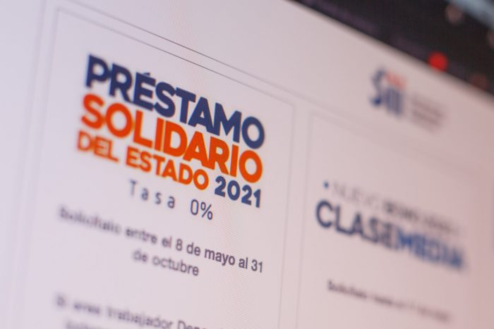

20/04/2024 - Chile

El Préstamo Solidario durante la pandemia del Covid-19
Guía para el Préstamo Solidario: Consulta, proceso de pago y consideraciones especiales para pensionados durante la pandemia del Covid-19.

Fechas, cálculo de cuotas y opciones para pensionados, en el marco del Préstamo Solidario durante la crisis sanitaria por Covid-19.
El Préstamo Solidario fue un crédito estatal entregado por el Estado durante los años 2020 y 2021 como respuesta a la pandemia del Covid-19, debido a la disminución de ingresos experimentada por diversos trabajadores. Este año continúa el proceso de pago de esta ayuda.
Consulta de deuda
Cómo consultar tu deuda
Si deseas verificar la existencia de deudas en relación con el Préstamo Solidario, puedes realizar una consulta a través del sitio web: Préstamo Solidario (sii.cl).
Una vez dentro de la página, debes seleccionar la opción “Autoconsulta” e iniciar sesión con la Clave Tributaria o Clave Única.
Una vez dentro del sistema, debería mostrarse el monto pendiente de pago o confirmar si el crédito estatal ya ha sido saldado.
Proceso de pago
Cómo se realiza el pago
La Operación Renta 2024 continúa, y este año también deben participar en el proceso aquellos que solicitaron el Préstamo Solidario.
Al momento de la solicitud, se acordó devolver el préstamo en cuatro cuotas, ajustadas al IPC, que deben comenzar a pagarse dos años después de la solicitud. Así, quienes lo solicitaron en 2020 pagan este año su tercera cuota, mientras que aquellos que lo pidieron en 2021 pagan su segunda cuota.
Fechas de pago del Préstamo Solidario
Para quienes solicitaron el Préstamo Solidario en 2020:
- Primera cuota: 2022
- Segunda cuota: 2023
- Tercera cuota: 2024
- Cuarta cuota: 2025
Para quienes lo solicitaron en 2021:
- Primera cuota: 2023
- Segunda cuota: 2024
- Tercera cuota: 2025
- Cuarta cuota: 2026
Cálculo de la cuota a pagar
Supongamos que una persona solicitó un Préstamo Solidario de $400.000, el pago de las cuotas sería el siguiente:
- Cuota 1 (10%): $40.000 + IPC.
- Cuota 2 (30%): $120.000 + IPC.
- Cuota 3 (30%): $120.000 + IPC.
- Cuota 4 (30%): $120.000 + IPC.
Caso excepcional en pensionados
Las personas pensionadas que solicitaron este préstamo podrán reembolsar el monto a la Tesorería General de la República en 48 cuotas mensuales, iguales y sucesivas, expresadas en UF y sin multas ni intereses. Además, el monto a pagar no puede exceder el 5% del monto de la pensión.
Categoría:
NacionalNoticias relevantes

Amenazas tras arresto de venezolanos en Quinta Normal
Amenazas tras arresto de venezolanos en Quinta Normal desatan tensión. Carabineros intensifican seguridad. Arrestados vinculados al homicidio del teniente Emmanuel Sánchez. Indignación en redes sociales.

Incendio en Kowloon, Hong Kong: Cinco Personas Muertas y Decenas de Heridos
Un incendio en un edificio residencial en el distrito de Kowloon, Hong Kong, dejó al menos cinco muertos y 33 heridos. El fuego, de categoría tres, fue controlado por los bomberos después de una hora.

Colo Colo cae frente a Fluminense en Copa Libertadores
Colo Colo cae 2-1 ante Fluminense en Copa Libertadores. A pesar del empate momentáneo, no pueden evitar la derrota. Con tres puntos, mantienen esperanzas de clasificar.

Nombres comunes de perros y gatos en Chile
El proyecto de Ley Duque propone otorgar un día libre a quienes pierdan una mascota, destacando el papel significativo de los animales domésticos en las familias. Además, se reporta que hay más de dos millones y medio de perros y gatos registrados en el país.